谨慎看待 Scaling laws
日期：2026 年 6 月 24 日 · 预计阅读时间：25 分钟 · 作者：Lilian Weng
目录
Scaling laws 是深度学习中最关键的经验发现之一。这个观察在形式上很简单：随着模型规模 \(N\)、数据集规模 \(D\) 和计算量 \(C\) 增大，训练损失 \(L\) 会以可预测的方式下降，遵循一条幂律曲线，在双对数坐标图上表现为直线。我们可以把 scaling laws 看作描述计算量、损失、模型规模和数据之间关系的框架；它的核心是，如何在 \(N\) 和 \(D\) 之间最优地分配宝贵的计算资源。
这种可预测性使 scaling laws 在实践中极具价值。一种常见流程是，用少量小规模训练实验拟合 scaling laws，再通过外推估计更大模型所需的 token 数量和计算量。
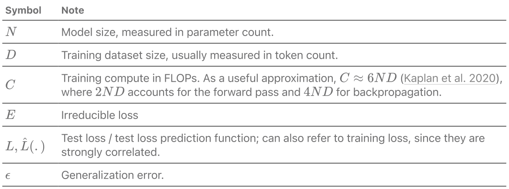
早期研究：机器学习损失的可预测性
早在 scaling laws 成为主流概念之前，研究者就已经考察过泛化误差随规模变化的可预测性。
Amari 等人（1992）使用贝叶斯方法和退火近似，推导出了四类学习曲线。
- 确定性学习算法、无噪声数据、唯一解：\(\epsilon\sim c\cdot D^{-1}\)，其中 \(c\) 是某个常数。
- 确定性学习算法、无噪声数据、多个等价解：\(\epsilon\sim c\cdot D^{-2}\)；每增加一个新数据点，学习都会更快，因为模型只需学习最优参数流形，而不必找到唯一的解点。
- 确定性学习算法、有噪声数据：\(\epsilon\sim c\cdot D^{-1/2}\)；数据中的噪声使学习更加困难。
- 随机学习算法、有噪声数据：\(\epsilon\sim c\cdot D^{-1}+E\)；这里，不可约损失 \(E\) 是随机学习器无法进一步降低的残余误差，例如模型在大规模数据上耗尽容量时就会出现这种情况。所有这四类学习曲线都遵循幂律：
其中，\(E\) 可以为 0，且 \(\alpha=-2,-1,-1/2\)。尽管他们的理论设定基于一个简化的二分类任务，但它为构建机器学习损失的经验预测模型指明了一个有用的方向。
Hestness 等人（2017）开展了最早的一批经验研究之一，解释了泛化误差、模型规模与数据之间的关系。对于给定的训练数据规模，他们通过网格搜索找出最合适的模型规模，然后绘制损失随训练数据集规模变化的曲线。在深度学习的四个不同领域——神经机器翻译、图像分类、语言建模和语音识别——中，他们观察到一种反复出现的模式：
- 泛化误差相对于一组因素（例如数据规模）呈幂律变化。
- 模型的改进会使误差曲线发生平移，但似乎不会影响幂律指数。有趣的是，架构会改变幂律拟合的偏移量（\(E\)），却不会改变指数（\(\alpha\)）。幂律曲线的斜率似乎是问题领域的属性，而非模型架构的属性。
- 拟合一个规模为 \(D\) 的数据集所需的模型参数量 \(N\)，也呈幂律变化。
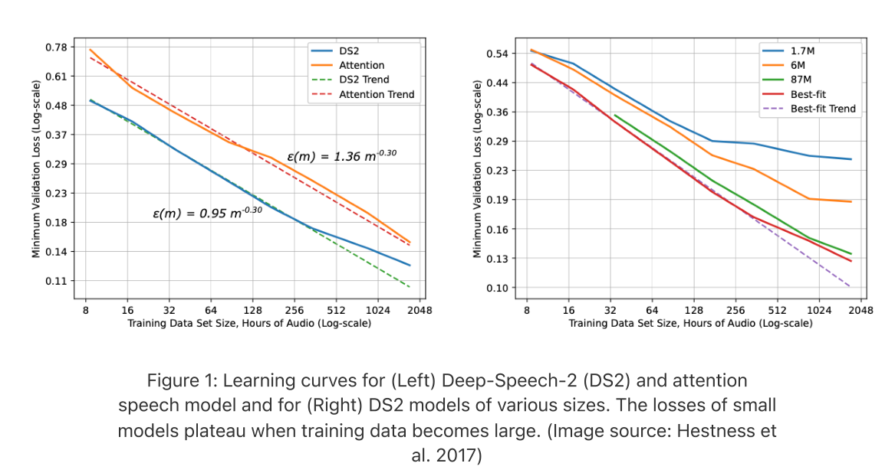
一幅概念示意图将学习曲线划分为三个阶段。在小数据区域，当学习信号不足时，模型的表现只比随机猜测略好一些。在中间的“幂律区域”，我们可以观察到损失、数据和模型规模之间的幂律关系。最后的不可约误差区域，则可以归因于数据噪声等因素。
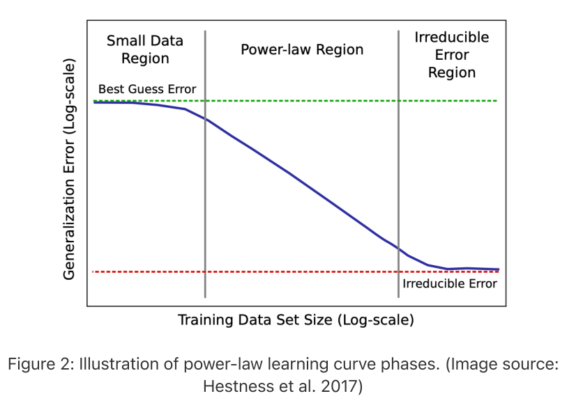
Rosenfeld 等人（2020）进一步尝试将误差建模为模型规模 \(N\) 与数据规模 \(D\) 的联合函数，研究涵盖多种架构（ResNet、WRN、LSTM、Transformer）和优化器（Adam、SGD 的变体）。他们在实验中观察到：固定其中一个维度时，误差随另一个维度按幂律衰减：
\[\widehat L(D,N)\approx\frac{A}{N^{\alpha}}+E_N,\qquad\widehat L(D,N)\approx\frac{B}{D^{\beta}}+E_D\]这两个表达式可以合并为如下联合形式：
\[\widehat L(D,N)\approx\frac{A}{N^{\alpha}}+\frac{B}{D^{\beta}}+E\]其中，\(A>0,B>0,\alpha\geq0,\beta\geq0\) 是标量常数，\(E\) 不依赖于 \(N\) 或 \(D\)。
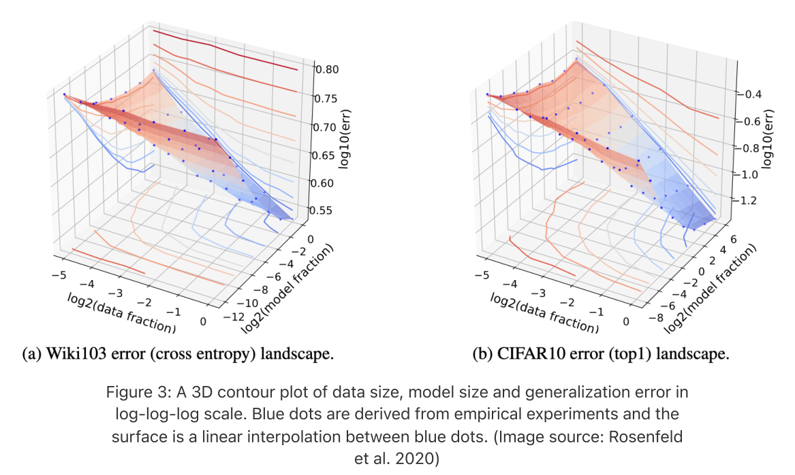
因此，他们可以构建一个简单的参数化函数作为预测模型，参数为 \(\theta=\langle A,B,E,\alpha,\beta\rangle\)：只在一组低于某些阈值的较小训练配置 \((D,N)\) 上训练，就能预测高于某些阈值的 \((D,N)\) 所对应的预期损失。
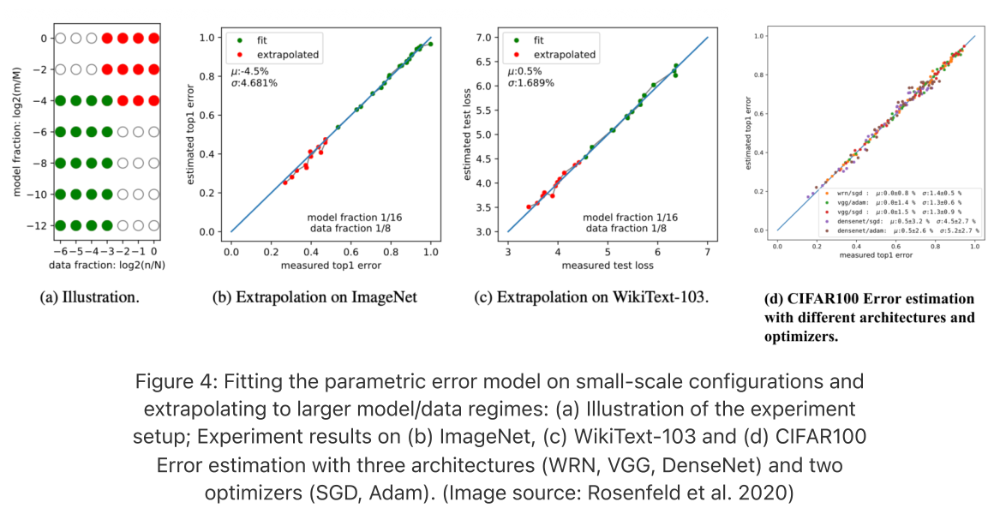
补充说明：这些早期工作借助了经典学习理论的直觉，例如用 VC 维（模型能够打散的最大点集的基数）作为容量的替代度量。但在现代深度学习研究中，VC 维通常过于粗糙，难以解释实际行为；相比理论给出的最坏情况界，经验幂律要清晰、实用得多。
数据无限区域中的 Scaling laws
Kaplan 等人的 Scaling laws
Kaplan 等人（2020）在语言建模领域普及了 scaling laws 这一概念。他们发现，交叉熵测试损失 \(L\) 与模型规模 \(N\)（不包括 embedding 层）、数据集规模 \(D\) 和训练计算量 \(C\) 分别呈幂律关系，而且这种关系跨越许多个数量级。
本段原文跨 PDF 第 3–4 页，句末“数量级”接自下一页。
这些发现与上一节的早期工作一致，不过 Kaplan 等人以 Transformer 语言模型为重点，通过更大规模的经验实验将这一概念形式化：模型规模从 768M 到 1.5B 个非 embedding 参数，数据集规模从 22M 到 23B 个 token。论文中所有训练实验都使用了先进行 3000 步线性 warmup、再按余弦衰减至零的学习率调度。
译注：768M 按博客原文保留；它与所引 Kaplan 论文中的下限 768 个参数不一致。
主要发现如下：
- 损失 \(L\) 分别与 \(N\)、\(D\) 和 \(C\) 呈幂律关系；要达到最优表现，三者必须同步扩大。
- 训练曲线遵循可预测的幂律，其参数大致不依赖于模型规模。
- 更大的模型具有更高的样本效率，也就是说，达到给定损失时，相比小模型，它们需要的优化步数和数据点都更少。
- 架构细节（宽度、纵横比等）的影响，小于规模本身的影响。
- 训练损失与测试损失正相关。（听起来很简单，但这是预训练工作的基础。另一方面，预训练损失的改善能否转化为后训练评估的提升，需要单独研究。）
- 在计算预算固定时，训练一个非常大的模型并在收敛前停止，比把一个较小的模型一直训练到收敛更加高效。Chinchilla scaling laws（下一节）与这一发现存在分歧：Kaplan 等人拟合出的指数较大，因此高估了最优模型规模。
他们用一个方程概括了对 \(N\) 和 \(D\) 的联合依赖：
\[\widehat L(N,D)=\left[\left(\frac aN\right)^{\alpha/\beta}+\frac bD\right]^{\beta}\]这一形式带来的一个有趣结论是，过拟合的程度（即模型复杂或数据较少时的情况）主要取决于比值 \(N^{\alpha/\beta}/D\)。这表明，为避免训练受到数据限制，数据必须按特定比例随模型规模一同增长。
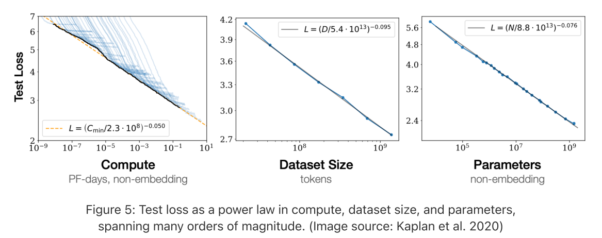
最具影响力、事后看来也最具争议的结论，是计算最优分配。Kaplan 等人发现 \(N_{\mathrm{opt}}\propto C^{0.73}\)，因而认为模型规模应比数据集规模增长得更快。具体来说，计算量增加 10 倍时，他们建议把模型规模扩大约 5.5 倍，而训练 token 数只增加约 1.8 倍。后来的 Chinchilla 论文推翻了这一建议，认为它会使大模型严重训练不足。
Kaplan 等人另一项有用的分析，是根据 \(D\) 和 \(N\) 近似估算训练所需的 FLOPs。每次乘加运算计为约 2 FLOPs。
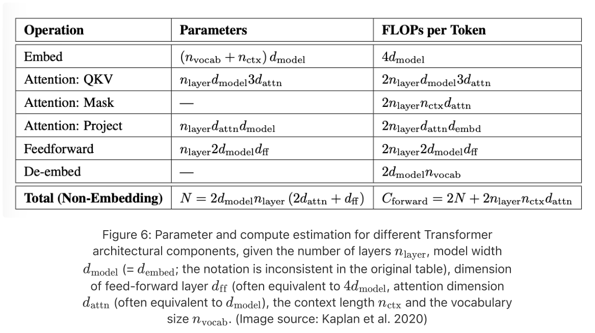
给定标准配置 \(d_{\mathrm{attn}}=d_{\mathrm{model}}=d_{\mathrm{ff}}/4\)，并在参数量 \(N\) 和每个 token 的前向计算量中排除 embedding 层：
\[\begin{aligned} N&=n_{\mathrm{layer}}d_{\mathrm{model}}3d_{\mathrm{attn}}+n_{\mathrm{layer}}d_{\mathrm{attn}}d_{\mathrm{model}}+n_{\mathrm{layer}}2d_{\mathrm{model}}d_{\mathrm{ff}}\quad\text{（不包括 embedding 层）}\\ &=2n_{\mathrm{layer}}d_{\mathrm{model}}(2d_{\mathrm{attn}}+d_{\mathrm{ff}})\\ &=12n_{\mathrm{layer}}d_{\mathrm{model}}^2 \end{aligned}\] \[\begin{aligned} C_{\mathrm{fwd}}&=2n_{\mathrm{layer}}(d_{\mathrm{model}}3d_{\mathrm{attn}}+n_{\mathrm{ctx}}d_{\mathrm{attn}}+d_{\mathrm{attn}}d_{\mathrm{embed}}+2d_{\mathrm{model}}d_{\mathrm{ff}})\\ &=2n_{\mathrm{layer}}(12d_{\mathrm{model}}^2+n_{\mathrm{ctx}}d_{\mathrm{attn}})\\ &=2N+2n_{\mathrm{layer}}n_{\mathrm{ctx}}d_{\mathrm{attn}}\\ &\approx2N\qquad\text{（假设 }n_{\mathrm{ctx}}<12d_{\mathrm{model}}\text{，且 }n_{\mathrm{ctx}}\text{ 项相对较小。）} \end{aligned}\]随后，我们把反向传播的 FLOPs 计为前向传播的两倍，因为反向传播会执行两次矩阵乘法，分别计算相对于输入激活和权重的 gradient。因此，每个 token 的训练 FLOPs 总计约为 \(6N\)，在 \(D\) 个 token 上训练的总 FLOPs 为 \(C\approx6ND\)。
Chinchilla Scaling laws
Chinchilla 论文（Hoffmann 等人，2022）通过更审慎的实验设计，研究了在固定计算预算 \(C\) 下，最优模型规模 \(N\)（包括 embeddings 在内的总参数量）与 token 数 \(D\) 之间的关系，得到了与 Kaplan 等人有所不同的答案。
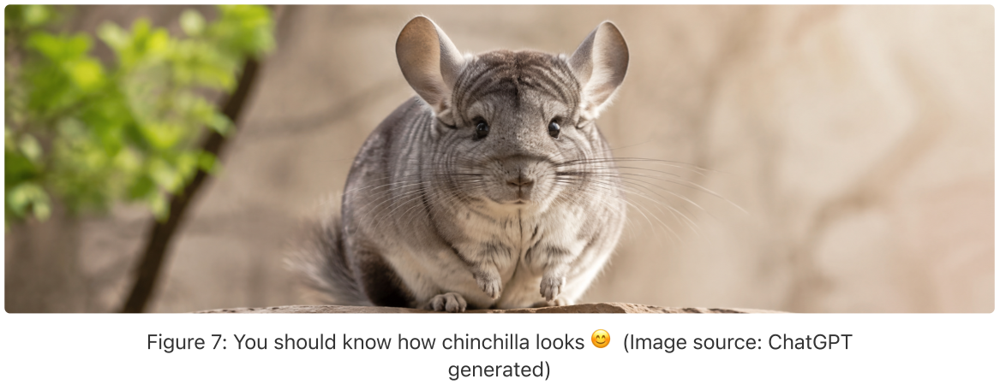
核心问题是，在约束 \(\operatorname{FLOPs}(N,D)=C\approx6ND\) 下，怎样分配资源才是最佳策略。换句话说，当我们只有有限的 FLOPs（给定数量的 GPU 运行给定的一段时间）时，应如何在更多数据 token 与更多模型参数之间做选择？
\[N_{\mathrm{opt}}(C),D_{\mathrm{opt}}(C)=\operatorname*{arg\,min}_{\text{s.t. }\mathrm{FLOPs}(N,D)=C}\widehat L(N,D).\]
Chinchilla 论文提出了三种设计精巧的 scaling laws 拟合方法。
实证实验扫描了 400 多个模型，模型规模从 70M 到超过 16B 参数，训练 token 数从 5B 到 500B。实验假设每个训练 token 都是唯一的（无限数据情形）。所有运行都采用余弦学习率调度，在训练期间将学习率衰减 10 倍。对模型规模进行扫描，就能勾勒出计算最优前沿。
方法 1：固定模型规模，改变 token 预算
对于每个参数数量 \(N\)，使用不同 token 预算进行多次训练，并记录每个 FLOP 预算 \(C\) 下达到的最小损失。
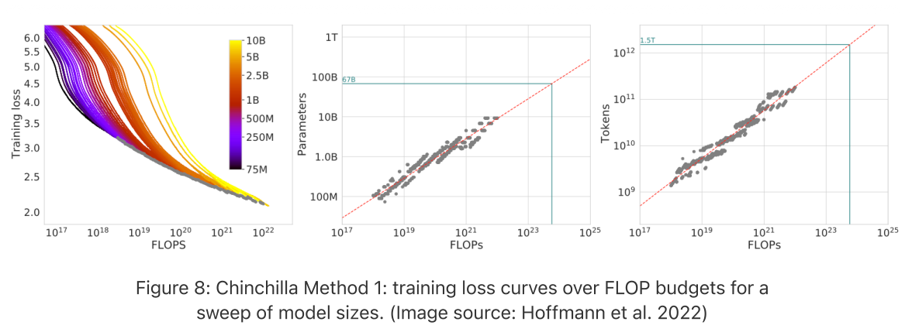
方法 2：IsoFLOP 剖面
固定计算预算 \(C\)，绘制最终损失与参数数量 \(N\) 的关系。每条 IsoFLOP 曲线在对数空间中大致呈抛物线，其最低点标示该计算预算下的最优模型规模。然后在不同预算下重复这一过程，就会在图中描出一条幂律直线。
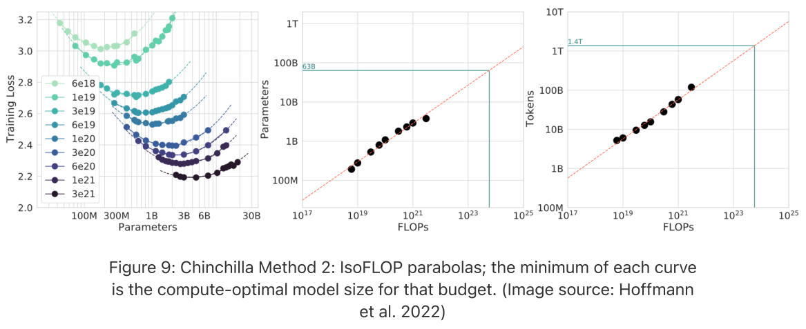
方法 3：参数化拟合
直接拟合与 Rosenfeld 等（2020）相同的参数化函数：
\[\widehat L(N,D)=\frac{A}{N^\alpha}+\frac{B}{D^\beta}+E.\]
实际上，通过在约束 \(\mathrm{FLOPs}(N,D)=C\approx6ND\) 下最小化 \(\widehat L(N,D)\)，就能得到最优 \(N_{\mathrm{opt}}(C),D_{\mathrm{opt}}(C)\) 的闭式近似解。
首先，将表达式化为只含 \(N\) 的形式（推导接下页）：
\[\widehat L(N)=AN^{-\alpha}+B\left(\frac{C}{6}\right)^{-\beta}N^\beta+E.\]
\[\widehat L'(N)=-\alpha AN^{-\alpha-1}+\beta B\left(\frac{C}{6}\right)^{-\beta}N^{\beta-1}=0.\]
对 \(N\) 的导数应为零。因此，
\[\alpha AN^{-\alpha-1}=\beta B\left(\frac{C}{6}\right)^{-\beta}N^{\beta-1},\]
\[\alpha A=\beta B\left(\frac{C}{6}\right)^{-\beta}N^{\alpha+\beta},\]
\[N_{\mathrm{opt}}=\left(\frac{\alpha A}{\beta B}\right)^{\frac{1}{\alpha+\beta}}\left(\frac{C}{6}\right)^{\frac{\beta}{\alpha+\beta}},\]
\[D_{\mathrm{opt}}=\frac{C}{6N_{\mathrm{opt}}}=\left(\frac{\beta B}{\alpha A}\right)^{\frac{1}{\alpha+\beta}}\left(\frac{C}{6}\right)^{\frac{\alpha}{\alpha+\beta}}.\]
当 \(\alpha\approx\beta\) 时，模型规模和训练 token 数应该以相同速率增长。
为寻找最优的 \(\theta=\langle A,B,E,\alpha,\beta\rangle\)，Chinchilla 论文采用 Huber 损失（对 outlier 具有鲁棒性；\(\delta=10^{-3}\)）及 L-BFGS 算法（适合参数较少的曲线拟合）。
\[\min_{A,B,E,\alpha,\beta}\sum_{\text{运行 }\{i\}}\mathrm{Huber}_\delta\left(\log\widehat L(N_i,D_i)-\log L_i\right),\]
其中
\[\mathrm{Huber}_\delta(x)=\begin{cases}\frac12x^2,&\text{若 }|x|\le\delta,\\\delta\cdot\left(|x|-\frac12\delta\right),&\text{其他情况。}\end{cases}\]
Chinchilla 通过三种互补的方法得到答案，而它们的最终结果彼此一致，这也是其结果相当有说服力的部分原因。
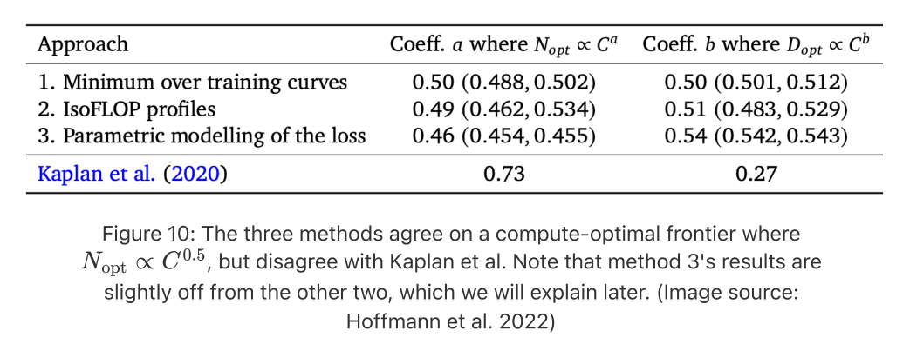
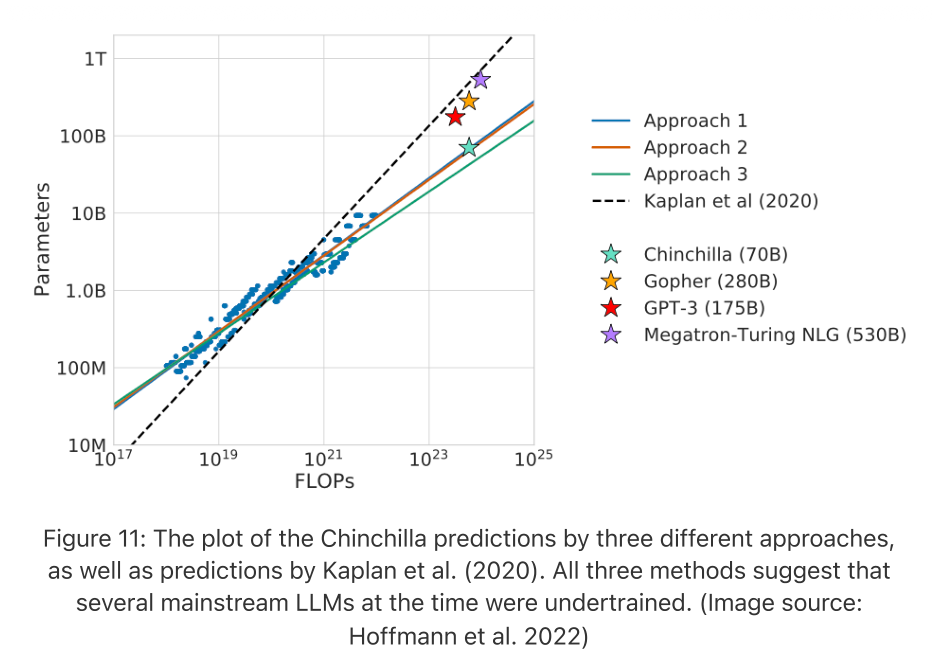
Chinchilla 论文声称，大多数大型模型（当时约为 2022 年）都训练不足。一个著名的演示支持了这一结论：他们用与 Gopher（Rae 等，2021；280B 参数、300B token 预算）相同的计算预算，训练了 Chinchilla（70B 参数，token 预算接下页）。
（承上页）Chinchilla 的 token 预算为 1.4T；它的模型规模只有四分之一，却使用了大约 4 倍的 token 训练，并在各方面都超过了 Gopher。
调和 Kaplan 与 Chinchilla
Chinchilla 的 scaling laws 与 Kaplan 等人的结论存在如下分歧：
- 不是“让模型比数据增长得更快”（\(N_{\mathrm{opt}}\propto C^{0.73}\)），而是每当模型规模翻倍，训练 token 数也应翻倍（\(N_{\mathrm{opt}}\propto C^{0.5}\)）。
- 不是“训练一个大模型，并在收敛前停止”，而是应该用更多数据训练一个更小的模型。
两篇论文仍然认同同一个基本原则，但对于模型规模与 token 数量之间的最优权衡位于何处，意见不同。它们为什么会产生如此大的分歧？
差异 1：Kaplan 等人的实验大多使用小模型。Kaplan 等人主要在较小模型上进行实验，而 Chinchilla 论文的实验规模大了 10 倍以上。当我们在双对数空间中外推时，拟合结果的一点小差异，就可能产生很大的差别（见玩具模拟）。
差异 2：对于小模型，embedding 参数数量很重要。在小参数量区间，embedding 参数占总量的比例不可忽略，因此是否将它们计入很重要。Pearce 和 Song（2024）沿这一思路进行了深入分析。用 \(N_{\setminus E},C_{\setminus E}\) 表示不计 embedding 时的模型规模和计算量，用 \(N,C\) 表示计入全部参数时的对应量。
- Kaplan 等人：\(N_{\setminus E}^*\propto C_{\setminus E}^{0.73}\)（非 embedding）。
- Chinchilla：\(N^*\propto C^{0.50}\)（总量）。
为将二者连接起来，他们拟合总参数量 \(N_T\) 与非 embedding 参数量 \(N_{\setminus E}\) 之间的关系，其中 \(\omega\) 为某个常数：
\[N=N_{\setminus E}+\omega N_{\setminus E}^{1/3}.\]
这一形式具有严格递增的良好性质，并且 \(\lim_{N\to\infty}N=N_{\setminus E}\)（原文如此），因为
\[\frac{N}{N_{\setminus E}}=1+\omega N_{\setminus E}^{-2/3},\qquad\lim_{N_{\setminus E}\to\infty}\frac{N}{N_{\setminus E}}=1.\]
将其代入 Chinchilla scaling laws 方程，得到
\[L(N_{\setminus E},C_{\setminus E})=A\left(N_{\setminus E}+\omega N_{\setminus E}^{1/3}\right)^{-\alpha}+B\left(\frac{C_{\setminus E}}{6}\right)^{-\beta}N_{\setminus E}^{\beta}+E.\]
\[\begin{aligned}L'(N_{\setminus E},C_{\setminus E})={}&-\alpha A\left(N_{\setminus E}+\omega N_{\setminus E}^{1/3}\right)^{-\alpha-1}\left(1+\frac{\omega}{3}N_{\setminus E}^{-2/3}\right)\\&+\beta B\left(\frac{C_{\setminus E}}{6}\right)^{-\beta}N_{\setminus E}^{\beta-1}=0.\end{aligned}\]
对 \(N_{\setminus E}\) 的导数应为零。整理得
\[\alpha A\left(N_{\setminus E}^*+\omega(N_{\setminus E}^*)^{1/3}\right)^{-\alpha-1}\left(1+\frac{\omega}{3}(N_{\setminus E}^*)^{-2/3}\right)=\beta B\left(\frac{C_{\setminus E}}{6}\right)^{-\beta}(N_{\setminus E}^*)^{\beta-1},\]
\[6^{-\beta}\frac{\alpha A}{\beta B}\left(N_{\setminus E}^*+\omega(N_{\setminus E}^*)^{1/3}\right)^{-\alpha-1}\left(1+\frac{\omega}{3}(N_{\setminus E}^*)^{-2/3}\right)(N_{\setminus E}^*)^{1-\beta}=C_{\setminus E}^{-\beta},\]
\[6\left(\frac{\beta B}{\alpha A}\right)^{1/\beta}\left(N_{\setminus E}^*+\omega(N_{\setminus E}^*)^{1/3}\right)^{\frac{1+\alpha}{\beta}}\left(N_{\setminus E}^*+\frac{\omega}{3}(N_{\setminus E}^*)^{1/3}\right)^{-1/\beta}N_{\setminus E}^*=C_{\setminus E}.\]
上式中，\(C_{\setminus E}\) 与 \(N_{\setminus E}\) 的关系不再是纯粹的幂律。只能将其局部近似为 \(N_{\setminus E}^*\overset{\sim}{\propto}C_{\setminus E}^g\)，其中 \(g\) 是基于一阶导数的局部指数（\(\overset{\sim}{\propto}\)），而非全局幂律指数，得到
\[g=\frac{\mathrm d\log C_{\setminus E}}{\mathrm d\log N_{\setminus E}}.\]
（\(g\) 的导数方向原文如此，与前述局部幂律指数的定义互为倒数。）关于如何近似指数 \(g\) 的完整细节，见 Pearce 和 Song（2024）的附录 A.1。
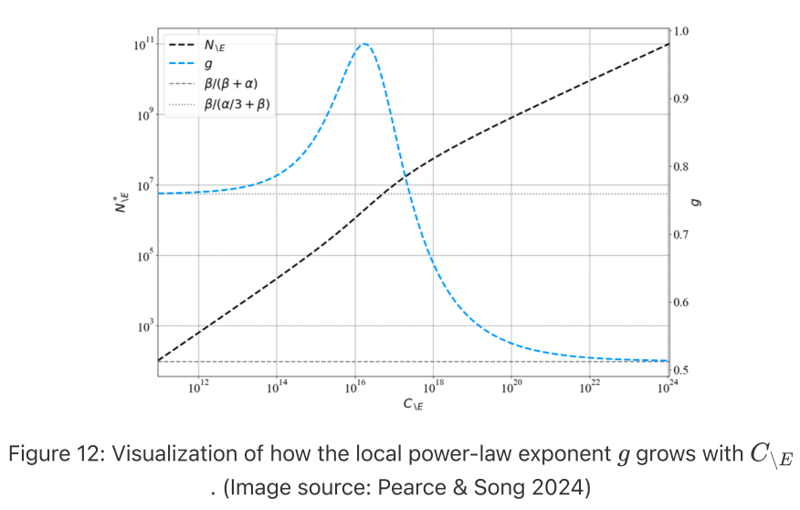
如上图所示，随着 \(C_{\setminus E}\) 增大，\(g\) 收敛到 Chinchilla 的估计值。利用上述方程生成合成训练曲线，在模型规模从 768M 到 1.5B 的区间内（与 Kaplan 等人相同），他们估计该区域内的 \(g\) 接近 Kaplan 的系数 0.73。
为什么是幂律？
在 AI 之外的许多领域中，也广泛观察到幂律，例如 Zipf 定律、无标度网络、城市 scaling laws，以及许多其他复杂系统。反复出现的模式是，大事件少见、小事件常见，而规模与频率之间的关系，在双对数尺度上往往是一条直线。
为什么 LLM 的 scaling laws 也呈幂律形式？
部分受到不同领域呈现不同指数这一现象（Hestness 等，2017）的启发，Sharma 和 Kaplan（2020）提出的一种早期解释假设，语言建模可以看作在数据的低维流形上进行回归。更多模型参数可以使数据流形划分得更细，从而带来更小的泛化误差。最简单地说，如果有效规模为 \(N\) 的模型将一个 \(d\) 维流形划分为 \(O(N)\) 个区域，典型的线性分辨率就按 \(\sim N^{-1/d}\) 缩放。这与上述 scaling laws 具有类似的幂律形式。这一理论最明确地适用于无限数据、欠拟合的情形，但实际估计数据流形的内在维度相当困难。
后来的另一种假设（Michaud 等，2023；Brill，2024）认为，知识或技能是以离散块的形式学会的（“离散化”），而这些技能的频率分布遵循幂律。模型先学会常见技能，之后学会罕见技能，从而使损失平滑地按幂律下降。
这里仅列出了两种假设，但还有更多研究，通过数据谱的尾部、核特征值、自然语言统计特性，或训练动力学中的相变，解释幂律 scaling 的形式。
数据受限区域的 scaling laws
经典 scaling laws 假设唯一数据实际上无限供应，不存在重复，也不进行多 epoch 训练。随着模型规模显著增长，我们正逐渐缺乏足够的高质量唯一 token。事实上，关于 AI 的 scaling 还能持续多久，一些争论的中心就是我们是否正在撞上“数据墙”。
还应强调，\(D\) 背后的数据集预期已经清洗过。预训练数据流水线往往是有效预训练流水线的重要组成部分，常见步骤包括去重（精确与模糊）、质量过滤、模板化内容移除、安全过滤、PII／版权内容遮蔽、基准去污染，以及根据语言、质量、内容类型等，对数据混合的各个组成部分仔细重新赋权。即使两个数据集包含相同的 token 数 \(D\)，高质量数据集与充斥互联网垃圾内容的数据集，也可能带来截然不同的计算效率。（本句接原文第 10 页。）
本页开头关于相同 token 数的数据集可能具有不同计算效率的跨页句子，已接续于上一页译出。
Hernandez 等（2022）的研究聚焦于一种受控版本：数据集大部分是唯一数据，只有一小部分重复数据。从一个大数据集出发，数据混合保留 90% 的非重复部分，将剩余 10% 替换为对原数据中极小一部分的重复。通过用 100B token 训练 Transformer 模型，他们观察到双下降现象，也就是说，随着对重复数据的强调程度变化，测试损失实际上可能先变差，再变好；重复部分的比例越大，这一效应就越明显。
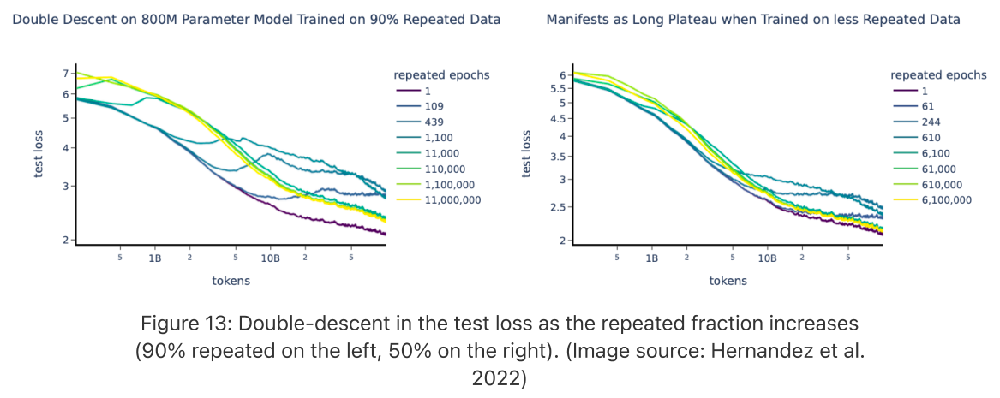
训练中期持平或上升的趋势，可能源于对重复数据的记忆。具有这种形状的学习曲线，会使 scaling law 的拟合准确性下降。他们还得出结论，重复数据会损害某些分布外（OOD）评估和下游微调。然而，其数据混合是在更像实验室的设置中构造的，而现实数据中的重复往往更复杂（例如，不同数据具有不同程度的重复、语义重复等）。
与其说数据重复会损害训练，我们更关心的是：既然唯一的高质量数据并非无限，而且训练期间很可能不得不重复数据，应该如何拟合 scaling laws？
Muennighoff 等（2023）研究了模型训练受到数据限制时，应该如何最优分配计算量。具体而言，他们通过约 400 次实验，实证研究数据重复的影响，覆盖 10M–9B 参数、最高 900B token 的数据规模，以及最多 1500 个 epoch。每个 epoch 重复完全相同的数据集，在 epoch 之间打乱顺序，并在留出的测试集上评估。
建模上的关键调整，是将总 token 数 \(D\) 分为两部分：（i）唯一 token 数 \(U_D\)，以及（ii）重复次数 \(R_D\)（即 epoch 数减 1）。因此有 \(D=U_D(1+R_D)\)。给定唯一数据预算 \(D_{\mathrm{uniq}}\)，根据定义，\(U_D=\min\{D_{\mathrm{uniq}},D\}\)，且 \(R_D=(D/U_D)-1\)。他们使用 Chinchilla scaling laws 寻找拟合 \(U_D\) 的最优模型规模 \(U_N\)，并通过重复次数 \(R_N=(N/U_N)-1\) 定义过剩模型规模。
然后，他们更新 Chinchilla 的参数化拟合（方法 3），使用有效（折扣后的）数据量 \(D'\) 和模型规模 \(N'\)，替代原始量：
\[\widehat L(N,D)=\frac{A}{(N')^\alpha}+\frac{B}{(D')^\beta}+E,\]
其中
\[D'=U_D+U_Dr_D\left(1-\exp\left(-\frac{R_D}{r_D}\right)\right).\]
直觉是，一个 token 的价值会随着重复呈指数衰减。在他们的模型中，每重复一次，token 就会损失其剩余价值的 \((1-1/r_D)\) 这一比例，其中 \(r_D\) 是可学习的“半衰期”参数。当 \(R_D=0\) 或 \(R_D\ll r_D\) 时，便恢复为 \(D'\approx D\)。
对于过剩模型规模，采用一种对称形式处理：
\[N'=U_N+U_Nr_N\left(1-\exp\left(-\frac{R_N}{r_N}\right)\right),\]
以刻画“大模型会更快地在重复数据上过拟合”，以及“模型可能相对于数据集过大”的观点。这一部分不太直观，我也没有找到令人满意的解释，说明为什么模型规模需要以与重复数据如此对称的形式出现。后来的 Lovelace 等（2026）改变了这一假设。
他们的经验拟合发现，过剩参数的价值比重复数据衰减得更快，即 \(r_N<r_D\)，因此应当将更多资源分配给更多 epoch，而非更多模型参数。正如作者也指出的，这种建模的一个弱点是，它会严重低估训练失败模型的最终测试损失，也就是损失在训练中途上升的模型，例如训练了 44 个 epoch 的模型。
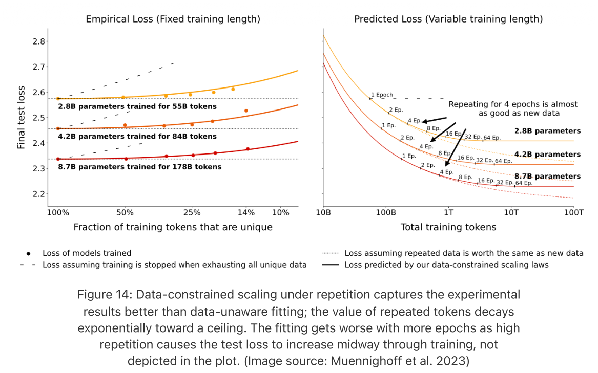
最近，Lovelace et al.（2026）采用不同方法重新考察了同一问题。Lovelace 等人没有把过度参数化建模为有效模型规模的收益递减，而是显式建模“模型规模 × 数据重复”的交互作用。实验中，他们训练了约 300 个模型，参数量覆盖 15M 到 1B，唯一 token 数量覆盖 50M 到 6B。
当他们固定模型规模，绘制不同数据重复水平下的拟合残差时，观察结果十分直观：更多 epoch 造成更大损害；有趣的是，更大的模型对重复更敏感。这暗示，损失惩罚很可能同时是模型规模和数据规模的函数。
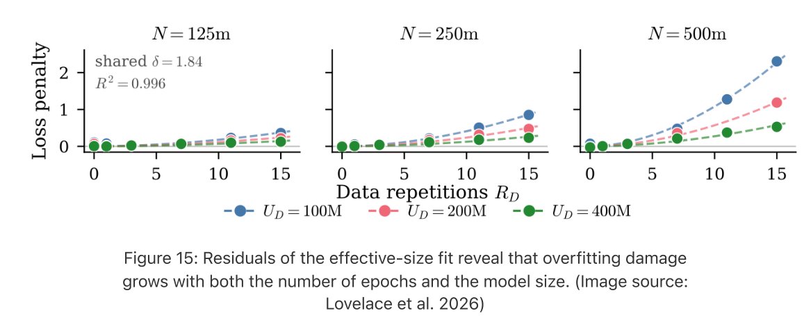
他们引入一个显式的过拟合惩罚项，以容量比 \(N/U_D\) 为基础构造，也就是参数量与唯一 token 数量之比：
\[\widehat L(N,U_D,R_D)=E+\frac A{N^\alpha}+\frac B{\bigl(U_D(1+R_D)\bigr)^\beta}+{\color{red}P\cdot R_D^\delta\cdot\left(\frac N{U_D}\right)^\kappa}\]其中：
- \(R_D\) 为重复次数；
- 标量 \(P\) 是一个可学习参数；
- 指数 \(\kappa\)（第二个可学习参数）允许惩罚随容量比 \(N/U_D\) 非线性变化；
- 重复次数上单独的指数 \(\delta\)（第三个可学习参数）将重复的非线性与 \(\kappa\) 解耦。
新增的这一项（红色）是直接的过拟合惩罚，它同时随数据重复次数，以及模型相对于可用唯一数据的过度参数化程度而增长。
他们还通过案例研究考察权重衰减如何影响有限数据约束下的训练，发现较强权重衰减可以降低数据重复造成的过拟合惩罚。
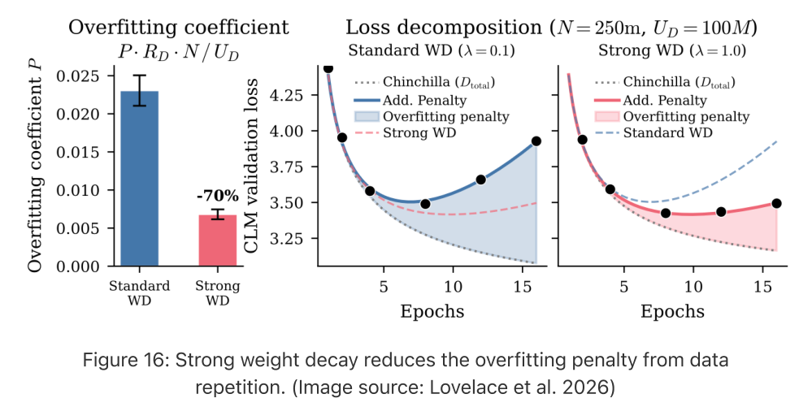
Muennighoff 等人和 Lovelace 等人的两种建模方法，都是通过经验曲线拟合构造的，因此，为什么数据受限的 scaling laws 应当恰好具有这些形式，以及为什么需要每个自由参数，仍然不清楚。我很好奇这一方向上更多的理论工作。
现实中拟合 scaling laws 的棘手之处
虽然形式简洁，但实践中，scaling law 拟合可能对看似微不足道的流程选择出人意料地敏感，例如如何统计参数、如何舍入精度、如何对损失求和或取平均，等等。
因为 scaling law 只在我们有能力训练的、相对较小且相对便宜的模型上拟合，而预测却要外推到规模大出若干个数量级的模型。在这样的设置下，看似舍入误差的选择，都可能导致预测大相径庭。
与此同时，scaling law 拟合假设唯一变化的因素是规模，这意味着模型架构、优化器、学习率调度、batch 大小增长方案、数据配比、tokenizer 和其他设计选择都应保持不变。另一个底层假设是，所有这些设置都已经过仔细调优，因为训练不足的模型等情况可能得出不同结论。
Kaplan 等人与 Chinchilla 结果之间的分歧，就是展示 scaling laws 拟合有多棘手的一个例子。
第二个例子是一项后续分析，它研究了为什么 Chinchilla 方法 3 与另外两种方法略有偏离。Besiroglu et al.（2024）从 Hoffmann et al.（2022）的图 4 中提取原始 \((N,D,L)\) 数据点，重新运行方法 3 的参数化拟合。他们发现了几个具体问题：
- L-BFGS-B 最小化器中的损失尺度偏高，这是对样本的 Huber 损失值取平均而非求和造成的，导致优化过早终止。在原始拟合和 bootstrap 过程中，损失最小化的提前停止，都产生了不一致的估计与窄得不合理的置信区间。
- 报告的 \(\alpha\) 和 \(\beta\) 被舍入到两位精度，使推导出的 \(A,B\) 看起来比实际偏离得更远。
玩具模拟
这里有一个由 ChatGPT 创建的玩具模拟控件，用于演示三种特定的失效模式。
我们假设真实函数为：
\[\widehat L(N,D)=482.01\cdot N^{-0.3478}+2085.43D^{-0.3658}+1.8172\]因此，\(N_{\mathrm{opt}}\propto C^{0.5126},\;D_{\mathrm{opt}}\propto C^{0.4874}\)。这是 Besiroglu et al.（2024）给出的估计。
模拟绘制损失预测值 \(\widehat L\) 与数据集规模 \(D\) 的关系，并提供一组滑块来展示：
- 损失精度：将损失从保留较多小数位舍入为较少小数位，会改变拟合参数值。
- 损失噪声：仅施加以 0.001 为单位的损失扰动，就会得到不同的拟合。
- 拟合区间敏感性：只拟合小模型、只拟合中等模型，或拟合全部模型，会得到不同的表观 scaling laws。
原文此处写的是横轴 \(D\)，下方控件实际标注为模型规模 \(N\)；控件的静态原图按原样保留。
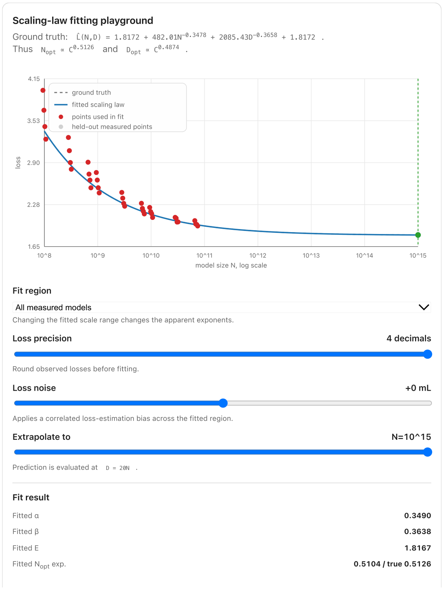
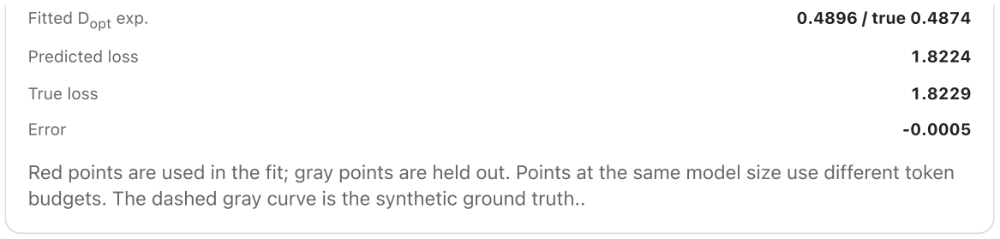
引用
请按以下格式引用本文：
Weng, Lilian。〈谨慎看待 Scaling laws〉（“Scaling Laws, Carefully”）。Lil’Log，2026 年 6 月。https://lilianweng.github.io/posts/2026-06-24-scaling-laws/
或使用以下 BibTeX 引用：
@article{weng2026scaling,
title = {Scaling Laws, Carefully},
author = {Weng, Lilian},
journal = {lilianweng.github.io},
year = {2026},
month = {June},
url = "https://lilianweng.github.io/posts/2026-06-24-scaling-laws/"
}参考文献
[1] S. Amari、N. Fujita 和 S. Shinomoto。〈四种学习曲线〉（“Four Types of Learning Curves”）。Neural Computation，4(4):605–618，1992。
[2] Hestness 等。〈深度学习 scaling 在经验上可预测〉（“Deep Learning Scaling is Predictable, Empirically”）。arXiv 预印本 arXiv:1712.00409，2017。
[3] Rosenfeld 等。〈跨规模泛化误差的构造性预测〉（“A Constructive Prediction of the Generalization Error Across Scales”）。ICLR 2020。
[4] Kaplan 等。〈神经语言模型的 scaling laws〉（“Scaling Laws for Neural Language Models”）。arXiv 预印本 arXiv:2001.08361，2020。
[5] Hoffmann 等。〈训练计算最优的大型语言模型〉（“Training Compute-Optimal Large Language Models”）。NeurIPS 2022。
[6] Pearce 和 Song。〈调和 Kaplan 与 Chinchilla 的 scaling laws〉（“Reconciling Kaplan and Chinchilla Scaling Laws”）。TMLR 2024。
[7] Bahri 等。〈解释神经 scaling laws〉（“Explaining Neural Scaling Laws”）。arXiv 预印本 arXiv:2102.06701，2021。
[8] Sharma 和 Kaplan。〈从数据流形维数推导神经 scaling law〉（“A Neural Scaling Law from the Dimension of the Data Manifold”）。arXiv 预印本 arXiv:2004.10802，2020。
[9] Hernandez 等。〈从重复数据学习的 scaling laws 与可解释性〉（“Scaling Laws and Interpretability of Learning from Repeated Data”）。arXiv 预印本 arXiv:2205.10487，2022。
[10] Muennighoff 等。〈数据受限语言模型的扩展〉（“Scaling Data-Constrained Language Models”）。NeurIPS 2023。
[11] Lovelace 等。〈面向数据受限训练的指导性 scaling laws〉（“Prescriptive Scaling Laws for Data Constrained Training”）。arXiv 预印本 arXiv:2605.01640，2026。
[12] Besiroglu 等。〈Chinchilla Scaling：一次复现尝试〉（“Chinchilla Scaling: A Replication Attempt”）。arXiv 预印本 arXiv:2404.10102，2024。
[13] Michaud 等。〈神经 scaling 的离散单元模型〉（“The Quantization Model of Neural Scaling”）。NeurIPS 2023。
[14] Brill。〈根植于数据分布的神经 scaling laws〉（“Neural Scaling Laws Rooted in the Data Distribution”）。arXiv 预印本 arXiv:2412.07942，2024。
[15] Rae 等。〈扩展语言模型：训练 Gopher 的方法、分析与见解〉（“Scaling Language Models: Methods, Analysis & Insights from Training Gopher”）。arXiv 预印本 arXiv:2112.11446，2021。
语言模型（Language-Model） · 基础（Foundation） · 预训练（Pretraining） · Transformer · 学习动态（Learning-Dynamics）
« 用于自我改进的 Harness 工程（Harness Engineering for Self-Improvement）
分享：Twitter · LinkedIn · Reddit · Facebook · WhatsApp · Telegram